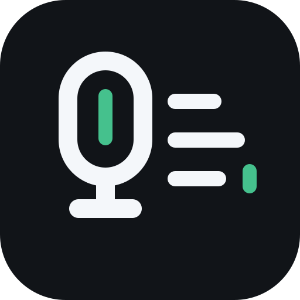

Provider control
Use the built-in OpenAI and Groq presets, or save a custom OpenAI-compatible endpoint for your own server.

OpenVoiceIMEAndroid voice input keyboard
OpenVoiceIME records speech, sends it to an OpenAI-compatible endpoint, and inserts the returned text into the app you are already using.
Setup
OpenVoiceIME is built for users who already have an API token or a compatible self-hosted transcription server.
Download the latest APK from this site and allow installation from your browser or file manager.
Select OpenAI, Groq, or a custom OpenAI-compatible endpoint. Enter the model, token, language, and optional prompt context.
Grant microphone permission and enable OpenVoiceIME in Android keyboard settings. Keep your normal typing keyboard. Use Android's keyboard picker where it lists voice keyboards, or HeliBoard's microphone shortcut.
Keyboard setup
Open Keyboard setup in OpenVoiceIME and choose Use HeliBoard or Keep my current keyboard. The guide includes download/settings buttons and a test field.
OpenVoiceIME is a voice-only keyboard. Gboard's microphone uses Google's voice typing and cannot be configured to open OpenVoiceIME. Manual switching through Android's keyboard picker depends on whether your phone shows auxiliary voice keyboards.
For a microphone shortcut, use HeliBoard. Download its official APK directly; no extra app store is required. Enable OpenVoiceIME, then pin Voice input in HeliBoard's toolbar settings.
Keyboard setup and troubleshootingUse the built-in OpenAI and Groq presets, or save a custom OpenAI-compatible endpoint for your own server.
Add names, terms, acronyms, or domain context that should travel with transcription requests.
Test server connectivity and review local response-time metrics without sending data to a developer backend.
Compatibility
Privacy model
Audio is sent to the endpoint you configure. API tokens are stored locally using encrypted app storage. Release builds block cleartext HTTP, so normal use should go through HTTPS.
Audio goes to your configured provider.
Transcript text is inserted into the active app.
Provider retention depends on the provider you choose.
Read the full privacy policyOpenVoice family
Host transcription and optional cleanup with Portable ASR, then dictate from Android, Linux, or Windows. Each project also works with other compatible clients and services.
Self-hosted transcription server with CPU or NVIDIA CUDA support and optional transcript cleanup.
Set up the serverAndroid voice keyboard that inserts transcribed speech into the app you are using.
Download the Android APKDesktop dictation with a recording shortcut and text insertion on Linux and Windows.
Download for desktopGet the APK
After installing, Android will guide you through enabling OpenVoiceIME as an input method.